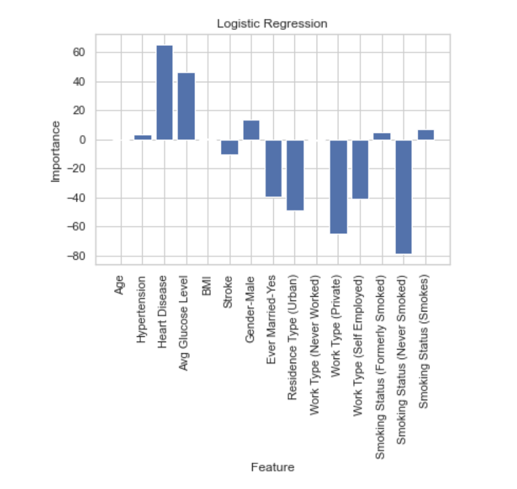

Pre-Analysis
First, the data was imported into a notebook for data cleanup and analysis.
For data cleanup, we removed the following individuals - 16 and younger; listed sex as neither male nor female (one individual); or if a data element had missing data (BMI). In addition, data was validated to ensure all IDs were unique.
After cleaning the data, charts were generated and machine learning was completed.
Decision Tree
A Decision Tree model was created to understand and predict stroke in the data model. There was an 88% accuracy for this model after training and testing.
